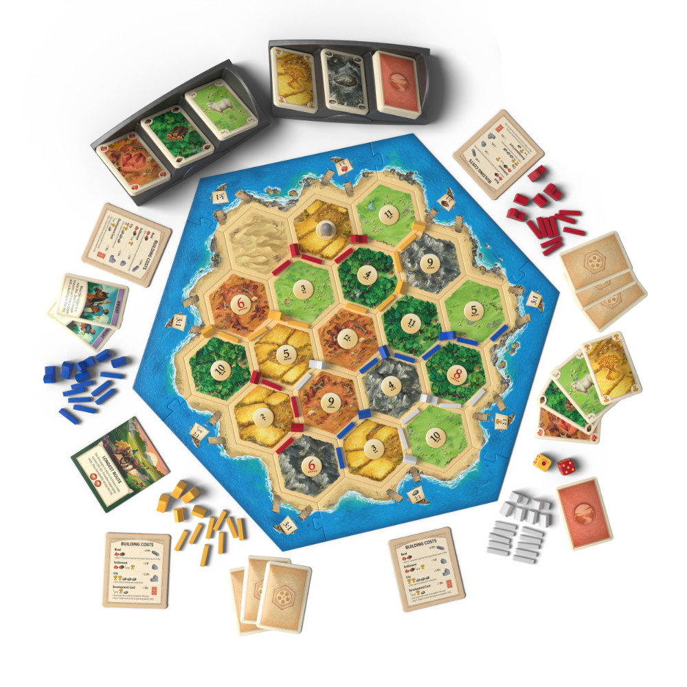
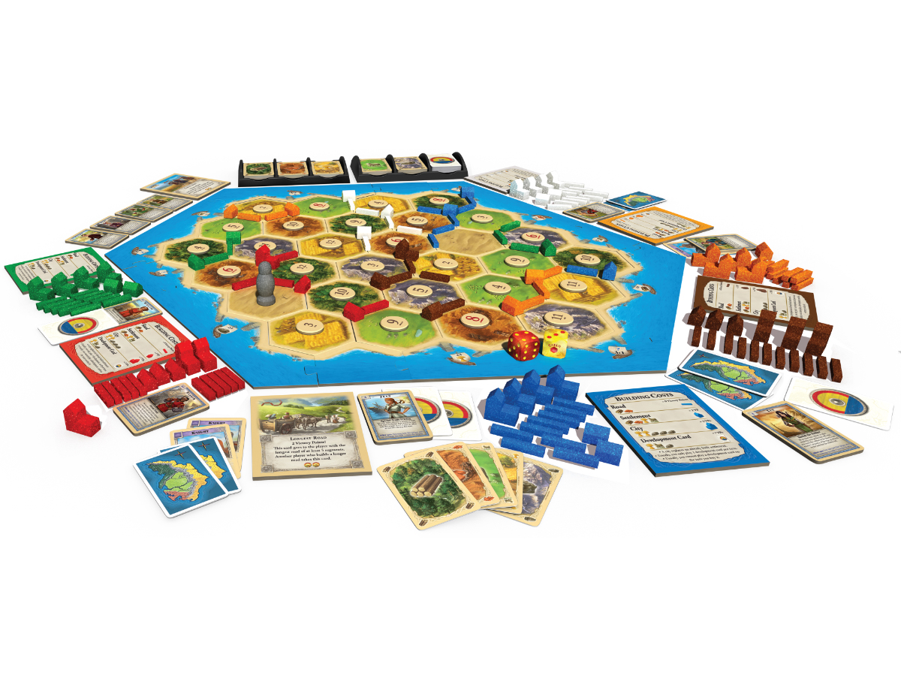

SMA2106 Board Game Course
สอนเล่น Catan
สร้างถนน ตั้งหมู่บ้าน แลกเปลี่ยนทรัพยากร และแข่งกันเป็นคนแรกที่ถึง 10 คะแนน
รู้จักอุปกรณ์
มารู้จักอุปกรณ์จริงบนโต๊ะ
แผ่นพื้นที่หกเหลี่ยม แต่ละแบบผลิตทรัพยากรต่างกัน
วงกลมตัวเลข บอกว่าต้องทอยได้เลขไหน พื้นที่นั้นจึงจะผลิต
ถนน หมู่บ้าน และเมือง วางตามขอบหรือจุดตัด ไม่ได้วางกลางแผ่น
ไพ่ทรัพยากร ใช้สำหรับแลกเปลี่ยนและจ่ายค่าก่อสร้าง

เป้าหมายของเกม
ใครถึง 10 คะแนนก่อน คนนั้นชนะ
หมู่บ้าน
เมือง
ถนนยาวที่สุด
กองทัพใหญ่ที่สุด
ไพ่คะแนน
จำง่าย ๆ ว่า การสร้างหมู่บ้านเพิ่มและยกระดับเป็นเมืองคือทางหลักในการทำคะแนน
ทรัพยากรและค่าก่อสร้าง
ทรัพยากร 5 อย่าง และสิ่งที่สร้างได้
ใช้ต่อเส้นทางไปยังจุดที่อยากสร้างหมู่บ้านใหม่
ให้ 1 คะแนน และเพิ่มจุดรับทรัพยากร
ยกระดับหมู่บ้านเป็น 2 คะแนน และรับทรัพยากรเพิ่มเป็นสองเท่า
อาจได้อัศวิน ความสามารถพิเศษ หรือคะแนนลับ
ถ้าขาดของ ลองแลกกับผู้เล่นคนอื่น ธนาคาร หรือท่าเรือ
ถ้าจะสร้างหมู่บ้าน เราต้องใช้ทรัพยากรกี่ชนิด?
ตำแหน่งของชิ้นส่วน
ชิ้นไหนวางตรงไหน
- หมู่บ้านและเมือง วางบนจุดตัดของแผ่นพื้นที่
- ถนน วางบนเส้นขอบ และต้องเชื่อมต่อกับเส้นทางของเรา
- วงกลมตัวเลข อยู่กลางพื้นที่ และบอกว่าพื้นที่จะผลิตเมื่อไร
- โจร ทำให้พื้นที่ที่มันยืนอยู่หยุดผลิตชั่วคราว
ลองชี้ของบนโต๊ะ แล้วเรียกชื่อชิ้นส่วนไปพร้อมกัน

อ่านกระดานให้เป็น
พื้นที่บอกชนิดทรัพยากร ตัวเลขบอกจังหวะผลิต
- หมู่บ้านหรือเมืองที่ติดพื้นที่นั้นจะรับทรัพยากรเมื่อทอยได้เลขตรงกัน
- เลข 6 และ 8 มีโอกาสออกบ่อย จึงควรสังเกตเป็นพิเศษ
- ทะเลทรายไม่ผลิตทรัพยากร และเป็นจุดเริ่มต้นของโจร
- เมืองผลิต 2 ใบแทน 1 ใบ
ลำดับในแต่ละตา
ในหนึ่งตา ทำตาม 3 ขั้นตอนนี้
ทอยลูกเต๋า แล้วแจกทรัพยากรให้ทุกคนที่อยู่ติดเลขนั้น
เจ้าของตาแลกกับผู้เล่นคนอื่น ธนาคาร หรือท่าเรือได้
สร้างถนน หมู่บ้าน เมือง หรือซื้อไพ่พัฒนา
ทอย → แลก → สร้าง
สมมติว่าเรามีหมู่บ้านติดป่าเลข 8 และทุ่งข้าวเลข 6 ลองกดผลลูกเต๋าแล้วดูว่าจะได้อะไร
การผลิตทรัพยากร
ถึงเป็นตาของเรา คนอื่นก็รับทรัพยากรได้
- การผลิตขึ้นกับเลข ไม่ได้ขึ้นกับว่าใครทอย
- ทุกคนที่มีหมู่บ้านหรือเมืองติดเลขนั้นจะได้รับทรัพยากร
- ถ้าโจรยืนอยู่ พื้นที่นั้นจะไม่ผลิตทรัพยากร
การวางหมู่บ้าน
หมู่บ้านใหม่ต้องวางให้ถูกตำแหน่ง
- หมู่บ้านต้องอยู่บนจุดตัดของแผ่นพื้นที่
- ต้องมีจุดตัดว่างคั่นจากสิ่งปลูกสร้างอื่นอย่างน้อยหนึ่งจุด
- หมู่บ้านที่สร้างระหว่างเกมต้องเชื่อมกับถนนของเรา
- ตอนเริ่มเกม ควรเลือกจุดที่ได้ทั้งเลขดีและทรัพยากรหลายชนิด
การแลกเปลี่ยน
ขาดอะไร ลองชวนคนอื่นแลก
เจ้าของตาต่อรองกับผู้เล่นคนอื่นได้ เช่น ไม้ 1 ใบ แลกข้าว 1 ใบ
ใช้ทรัพยากรชนิดเดียวกัน 4 ใบ แลกของที่ต้องการ 1 ใบ
ท่าเรือช่วยให้อัตราแลกดีขึ้นเป็น 3:1 หรือ 2:1 สำหรับของบางชนิด
อย่ารอให้ของมาครบเอง—การพูดคุยและต่อรองคือหัวใจสำคัญของ Catan
เรามีไม้ อิฐ แกะ และข้าว อย่างละ 1 ใบ จะสร้างอะไรได้?
ตัดสินใจก่อนสร้าง
ดูไพ่ในมือ แล้วเลือกว่าจะสร้างอะไร
- ถนนช่วยเปิดทาง แต่ยังไม่เพิ่มคะแนนทันที
- หมู่บ้านเพิ่มทั้งคะแนนและจุดรับทรัพยากร
- เมืองทำให้จุดเดิมผลิตได้มากขึ้น
- ไพ่พัฒนาช่วยพลิกสถานการณ์หรือซ่อนคะแนนไว้ได้
เมื่อทอยได้ 7
เลข 7 ไม่ผลิตทรัพยากร แต่ทำให้โจรเคลื่อนที่
- ผู้ที่ถือไพ่ทรัพยากรมากกว่า 7 ใบ ต้องทิ้งครึ่งหนึ่ง
- ผู้ที่ทอยได้ 7 ย้ายโจรไปปิดพื้นที่หนึ่งแห่ง
- จากนั้นสุ่มหยิบทรัพยากร 1 ใบจากผู้เล่นที่สร้างติดพื้นที่นั้น
- พื้นที่ที่มีโจรยืนอยู่จะหยุดผลิตทรัพยากร
ถ้าเราถือไพ่ทรัพยากร 9 ใบ แล้วมีคนทอยได้ 7 เราต้องทิ้งกี่ใบ?
ไพ่พัฒนา
ไพ่พัฒนาช่วยพลิกเกม และบางใบให้คะแนนลับ
ใช้ย้ายโจร และช่วยชิงกองทัพใหญ่ที่สุด
เช่น สร้างถนน รับทรัพยากร หรือผูกขาดทรัพยากร
เก็บเป็นความลับไว้จนกว่าจะประกาศชนะ
ข้อควรจำ: ไพ่พัฒนาที่เพิ่งซื้อมา โดยทั่วไปยังใช้ในตาเดียวกันไม่ได้

เมื่อเล่น 5–6 คน
ต่อเกาะให้ใหญ่ขึ้น แล้วเพิ่มชิ้นส่วนผู้เล่น
- ใช้ชิ้นส่วนจากกล่องหลักร่วมกับชุดเสริม 5–6 คน
- เพิ่มแผ่นพื้นที่ กรอบทะเล หมายเลข ไพ่ และผู้เล่นอีก 2 สี
- ก่อนเริ่มสอน ควรแยกชิ้นส่วนตามสีและวางกองไพ่ให้หยิบง่าย
ใช้ภาพนี้เทียบกับของบนโต๊ะ แล้วค่อยเริ่มจัดเกมไปพร้อมกัน
ลองเล่นแบบมีผู้สอนนำ
กิจกรรมสอนเล่น 20 นาทีแรก
ทอยลูกเต๋า แล้วให้ทุกคนช่วยกันชี้ว่าใครได้ทรัพยากร
ให้เจ้าของตาลองชวนคนอื่นแลกของอย่างน้อยหนึ่งครั้ง
ก่อนสร้าง ลองถามว่า “ไพ่ในมือชุดนี้สร้างอะไรได้บ้าง”
ถ้าทอยได้ 7 ให้สาธิตขั้นตอนของโจรช้า ๆ
ช่วงแรกยังไม่ต้องรีบ เป้าหมายคือให้ทุกคนคุ้นกับจังหวะ “ทอย → แลก → สร้าง”
กลยุทธ์สำหรับเกมแรก
3 แนวคิดเริ่มต้น
6/8/5/9 มักผลิตบ่อยกว่า 2/12
พยายามรับทรัพยากรหลายชนิด จะได้มีทางเลือกมากขึ้น
มองล่วงหน้าว่าถนนจะพาเราไปตั้งหมู่บ้านใหม่ตรงไหน
ในเกมแรก แค่พยายามเก็บของให้หลากหลายและสร้างหมู่บ้านเพิ่ม ก็ถือว่าเริ่มต้นได้ดีแล้ว
เช็กความเข้าใจ
ลองตอบสั้น ๆ ก่อนเริ่มเกม
ข้อ 1: Catan ชนะเมื่อได้กี่คะแนน?
สรุปก่อนเริ่ม
จำ 5 เรื่องนี้ ก็พร้อมเริ่มเกม
เป้าหมายคือ 10 คะแนน
แต่ละตาให้จำว่า ทอย → แลก → สร้าง
เมื่อเลขออก ทุกคนที่สร้างติดเลขนั้นจะได้รับทรัพยากร
ถ้าขาดของ ลองชวนคนอื่นแลก แทนที่จะรออย่างเดียว
เลข 7 ทำให้โจรย้าย และคนที่ถือไพ่เกิน 7 ใบอาจต้องทิ้งครึ่งหนึ่ง
กติกาทางการ | เกมและภาพทางการ | ภาพชุด 5–6 คน
ภาพทางการ © CATAN GmbH / CATAN Studio ใช้ประกอบการสอน ส่วนแผนภาพอื่นจัดทำขึ้นใหม่